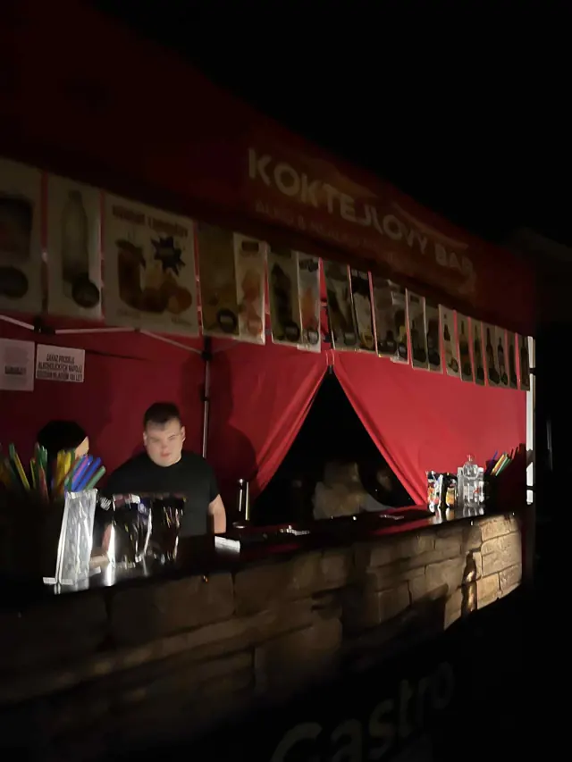
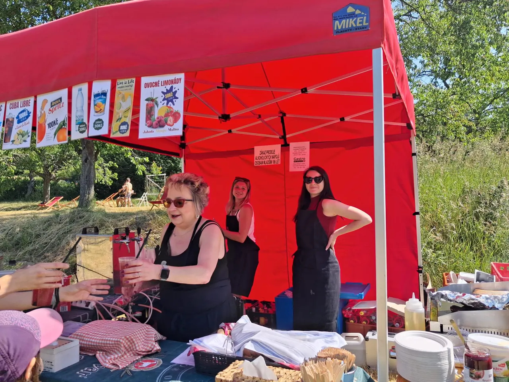
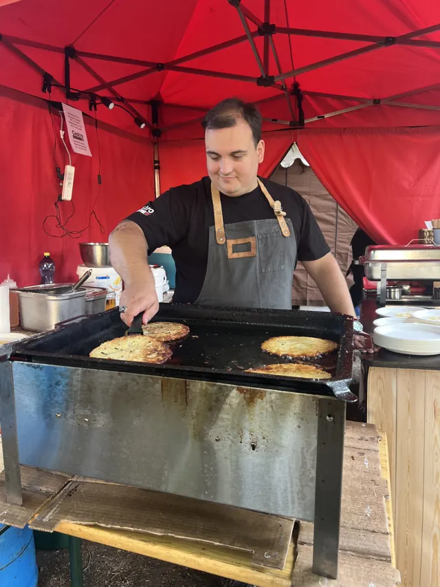
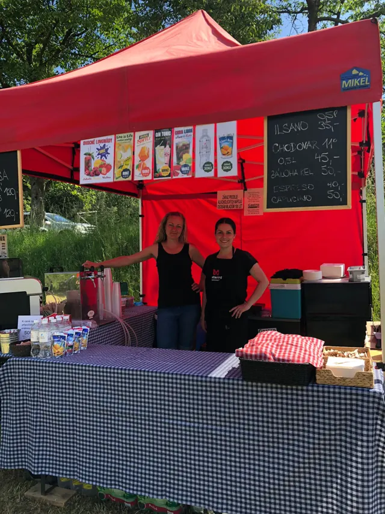

🍸 Koktejlový bar
Naši barmani vám s úsměvem a s láskou namíchají osvěžující alko i nealko koktejly. K tomu točené pivo, limonády a káva.
Co nalejeme →
Catering & koktejlový bar · Mariánské Lázně a okolí
Nezávazná poptávka ☎ 737 616 276
Gastro Na Sto je rodinný catering z Mariánských Lázní. S láskou připravujeme občerstvení na akcích po celém Karlovarském kraji, Tachovsku a okolí, ať už je to svatba na zahrádce nebo městské slavnosti.
Vyberte si jednu službu, nebo je zkombinujte – sortiment vždy ladíme s vámi.

Naši barmani vám s úsměvem a s láskou namíchají osvěžující alko i nealko koktejly. K tomu točené pivo, limonády a káva.
Co nalejeme →
Šťavnaté klobásy a hermelíny i křupavé bramboráky – smažené a grilované přímo před hosty.
Co ugrilujeme →
Pořádáte oslavu, večírek nebo svatbu? Rádi se domluvíme na spolupráci a sortimentu přesně pro vaše hosty.
Poptat termín →Takhle vypadá naše nabídka na veřejných akcích. Pro soukromé akce ji sestavíme na míru.
Z akcí, na kterých jsme byli.
Napište pár údajů o akci a do 24 hodin se ozveme s nabídkou. Nebo rovnou volejte. Kontaktní osobou je Filip Prokeš.
Sídlíme v Mariánských Lázních a běžně jezdíme po Karlovarském kraji – Cheb, Františkovy Lázně, Karlovy Vary, Tachov. Vzdálenější akce po domluvě.
Na letní sezónu a svatby doporučujeme poptat 2–3 měsíce předem. Menší akce zvládneme i za pár týdnů, pokud máme volný termín.
Ano. Kromě klasik jako Mojito, Aperol Spritz nebo Cuba Libre připravujeme nealko verze a ovocné limonády.
Rovnou plochu zhruba 3 × 3 m pro stan a přípojku elektřiny 230 V. Stan, bar, grill i nádobí vozíme vlastní.
Cena záleží na počtu hostů, délce akce a sortimentu. Po vyplnění poptávky pošleme nezávaznou nabídku do 24 hodin.